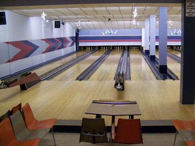

-

This is super banana
Welcome to North Vancouver's 5 pin bowling center Open since 1961, this family oriented establishment has been owned and operated by 3 time Canadian Bowling Champion Richard Grubb since 1983. We have 16 lanes to host leagues, glowbowling, bumper bowling, ball ramps, a party room which also glows, video games and snacks. We participate in fund raisers, parties for Christmas, the office and team parties. Fun for everyone. Give us a call or drop in.
-

Lights! Music!
Come to our glow bowling nights for a fun twist!
How to Keep Score
A game consists of 10 frames. A frame consists of 3 or less tries to knock down 5 pins. The point value for each pin is in the picture. Knocking all the pins down with 3 balls is 15 points. Knocking all the pins down with the first 2 balls (a spare) is the same 15 points plus the points aquired with first ball thrown in the next frame. Knocking all the pins down with the first ball (a strike) is the same 15 points plus the points of the first two balls in the next frame.